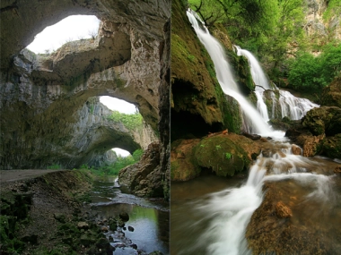
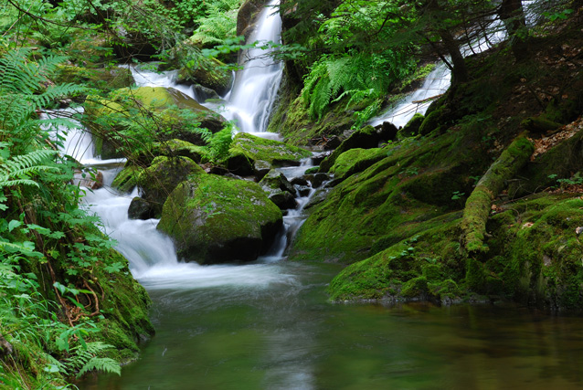

Крушинските водопади се намират в Северна България, близо до село Крушуна, откъдето идва и името им. Мястото се намира на 28 километра от град Ловеч. Крушунските водопади са известни със своята живописност. Образувани са от множество карстови тераси и покрай тях има пътека, която води до пещерата от която извира водата. До водопадите се стига много лесно. От площада на село Крушуна се завива надясно и не след дълго се стиго до място, удобно за паркиране. След това се минава по пътека, която води до самия голям водопад, където има изградени мостове, позволяващи на туристите да се полюбуват на природната красота.
Каньонът на водопадите е екопътекa, която се намира на около половин час западно от град Смолян. Денивелацията на пътеката е около 700 метра, като най-горната й точка е на около 1800 метра надморскависочина. Пътеката се вие през гората като метални и живописни дървени мостчета я прехвърлят туотдясно, ту отляво на Еленска река. Смърчови дървета пък я обграждат, докато тя се провира покрай скални блокове, наречени Редените камъни, които природата е извайвала милиони години. Разхождайки се, неусетно се стига до Вековния бук, имащ диаметър над 4,20 метра. Пътеката обаче е интересна най-вече заради красивите водопади, които са 46 на брой, като пет от тях са с по-внушителни размери.
